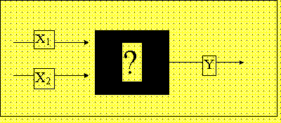
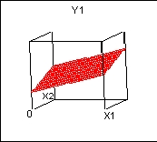
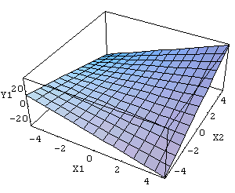
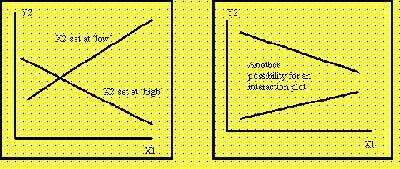

|
5.
Process Improvement
5.2. Introduction 5.2.1. What's wrong with "traditional" non-statistical approaches?
|
|||
|
By varying the inputs, we see changes in the output
The "One Factor at a Time" Approach to varying
the inputs
The OFAT approach does not take interactions into account
|
A Process "Black Box" Model
Suppose that we have a process with two inputs and one output (Y), as shown below. We do not know what mechanism is inside the process ‘box’ so we call it a ‘black box.’  FIGURE 2.1 Unknown process with two inputs, one output. Of course we might derive a universal physico-chemical model for the process, but this tends to be expensive and best left to Nobel-prize winners. We nevertheless have to understand the best setting of the process at least in a local area of operation, so we do empirical experiments. One such experiment could be: Hold all inputs but one fixed, and see the best result when the one free input is varied. Fix that input at that ‘best’ value. Then vary one other input. See where the best output is now. Fix the second input at that ‘best’ value, and so on until we run out of input factors. This is called a ‘One factor at a time’ (OFAT) experiment, and is practiced widely. It used to be thought that this was the only ‘scientific’ approach. OFAT experiments will work if the true model inside the black box looks generally as follows.  FIGURE 2.2 Simple, Main-Effects Model: Y1 = X1 + X2 This model is ‘flat’ in all dimensions, and is called a ‘main effects’ model. No matter at which point on the surface one begins, increasing an input always has the same effect on the output. There are no ‘interactions’ between inputs. In this model, X1 at its highest setting will always
give best Y, and similarly X2 at its highest setting
will always give best Y. (We are assuming highest Y is ‘best.’)
OFAT experiments will not work if the true model inside the black box looks something like:  An interactions model of this type has a ‘twist’ to the response surface. This means that the response Y1 to, say, X1 will be different depending on the setting of X2 (and vice-versa). Interactions can also be plotted in two dimensions as in the following two examples.  In this model, if one started experimenting with X2 set at its lowest value, X1 would have to be moved toward its lowest value to get a high Y. On the other hand, if one started out with X2 fixed at its highest value, X1would have to be moved up to get a high Y. We do not know if X1 and X2 both set at low will give a better Y that X1 and X2 both set high. In a model with many inputs, the two-factor interactions such as X1*X2are usually of interest, as they might point the way to a better product with minimal additional expense. OFAT experimentation leaves us in the dark about factor interactions. |
||